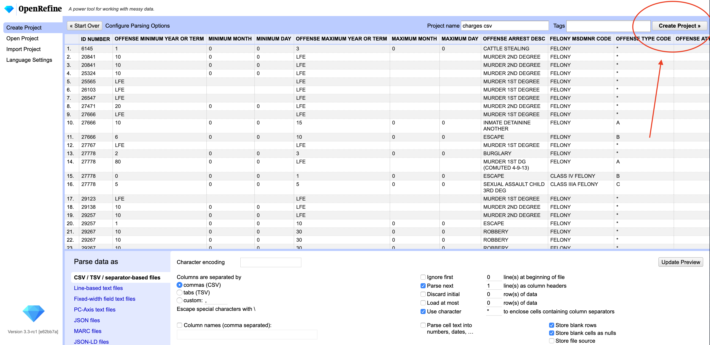
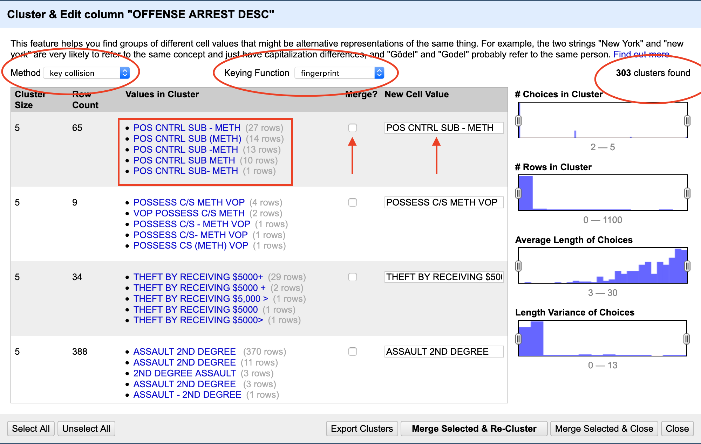

Chapter 12 Data Cleaning Part III: Open Refine
Gather ’round kids and let me tell you a tale about your author. In college, your author got involved in a project where he mapped crime in the city, looking specifically in the neighborhoods surrounding campus. This was in the mid 1990s. Computers were under powered. Tools were pretty primitive. I was given a database of nearly 50,000 calls for service.
And then I learned that addresses were not stored in a standard way. However the officer wrote it down, that’s how it was recorded.
What did that mean?
It meant the Lincoln Police Department came up with dozens of ways to say a single place. And since the mapping software needed the addressed to be in a specific form, I had to fix them. For example, I will go to my grave knowing that Lincoln High School’s street address is 2229 J Street. Police officers wrote down LHS, L.H.S., Lincoln HS, Lincoln H.S., LHS (J Street), 2229 J, 2229 J ST, St., Street and on and on and on. That one was relatively easy. The local convenience store chain, with 8 locations around the city, was harder. I had to use the patrol district to locate them.
It took me four months to clean up more than 30,000 unique addresses and map them.
I tell you this because if I had Open Refine, it would have taken me a week, not four months. Every time I talk about Open Refine, I remember this, and I get mad.
We’re going to explore two ways into Open Refine: Through R, and through Open Refine itself.
12.1 Refinr, Open Refine in R
What is Open Refine?
Open Refine is a series of tools – algorithms – that find small differences in text and helps you fix them quickly. How Open Refine finds those small differences is through something called clustering. The algorithms behind clustering are not exclusive to Open Refine, so they can be used elsewhere.
Enter refinr, a package that contains the same clustering algorithms as Open Refine but all within R. Go ahead and install it if you haven’t already by opening the console and running install.packages("refinr"). Then we can load libraries as we do.
Let’s load a simple dataset where we know there’s a simple problem. Let’s load the dataset of mountainlion sightings.
## Parsed with column specification:
## cols(
## ID = col_double(),
## `Cofirm Type` = col_character(),
## COUNTY = col_character(),
## Date = col_character()
## )The issue in this dataset, if you look carefully, is that there’s two Sheridan counties – a Sheridan and a sheridan.
## # A tibble: 42 x 2
## COUNTY n
## <chr> <int>
## 1 Banner 6
## 2 Blaine 3
## 3 Box Butte 4
## 4 Brown 15
## 5 Buffalo 3
## 6 Cedar 1
## 7 Cherry 30
## 8 Custer 8
## 9 Dakota 3
## 10 Dawes 111
## # … with 32 more rowsThe first merging technique we’ll try is the key_collision_merge. The key collision merge function takes each string and extracts the key parts of it. It then puts every key in a bin based on the keys matching. So in this case, it finds sheridan and Sheridan and recognizes that the keys match, and since Sheridan is more common, it uses that one.
One rule you should follow: do not overwrite your original fields. Always work on a copy. If you overwrite your original field, how will you know if it did the right thing? How can you compare it to your original data? To follow this, I’m going to mutate a new field called CleanCounty and put the results of key collision merge there.
Then, to show it worked, I’ll do the same group and count.
mountainlions %>%
mutate(CleanCounty = key_collision_merge(COUNTY)) %>%
group_by(CleanCounty) %>% tally()## # A tibble: 41 x 2
## CleanCounty n
## <chr> <int>
## 1 Banner 6
## 2 Blaine 3
## 3 Box Butte 4
## 4 Brown 15
## 5 Buffalo 3
## 6 Cedar 1
## 7 Cherry 30
## 8 Custer 8
## 9 Dakota 3
## 10 Dawes 111
## # … with 31 more rowsAnd just like that, instead of 35 and 2 in two different Sheridan counties, we have 37 in one Sheridan County.
12.2 More complex issues
Let’s load a dataset of the charges Nebraska prison inmates were convicted of, which is why they’re in prison. We’ll also use janitor’s clean_names function to give us usable headers.
## Parsed with column specification:
## cols(
## `ID NUMBER` = col_double(),
## `OFFENSE MINIMUM YEAR OR TERM` = col_character(),
## `MINIMUM MONTH` = col_double(),
## `MINIMUM DAY` = col_double(),
## `OFFENSE MAXIMUM YEAR OR TERM` = col_character(),
## `MAXIMUM MONTH` = col_double(),
## `MAXIMUM DAY` = col_double(),
## `OFFENSE ARREST DESC` = col_character(),
## `FELONY MSDMNR CODE` = col_character(),
## `OFFENSE TYPE CODE` = col_character(),
## `OFFENSE ATTEMPT DESC` = col_character(),
## `HABITUAL CRIMINAL` = col_character(),
## `OFFENSE RUN CODE` = col_character(),
## `COUNTY COMMITTED` = col_character()
## )The problematic – and among the most interesting – fields in this dataset is the name of the charges. What is the most common charge keeping someone in prison?
I’m not going to run the list here because it’s long – thousands of lines long. You should run it yourself:
charges %>% tabyl(offense_arrest_desc)You’ll see right away that there’s problems. There’s dozens upon dozens of charges that are the same thing, just slightly different. There’s 4003 unique charges, and many of them are duplicates.
## [1] 4003So how does key_collision_merge do with this?
charges %>%
mutate(
clean_charges = key_collision_merge(offense_arrest_desc)
) %>%
group_by(clean_charges) %>%
tally() %>%
nrow()## [1] 3420Cuts down the duplicates by 583. But since the charges are often multiple words, we should try using n_gram_merge, which looks a multiple words.
Here’s an example using sensible defaults for weighting – unfortunately the documentation doesn’t do much to explain what they are.
charges %>%
mutate(
clean_charges = n_gram_merge(
offense_arrest_desc, weight = c(d = 0.2, i = 0.2, s = 1, t = 1))) %>%
group_by(clean_charges) %>%
tally() %>%
nrow()## [1] 3033Cuts it down by almost 1000. That seems pretty good. Here’s a different method, using a method that turns words into phonetic spellings called soundex.
charges %>%
mutate(
clean_charges = n_gram_merge(
offense_arrest_desc, method = "soundex", useBytes = TRUE
)) %>%
group_by(clean_charges) %>%
tally() %>%
nrow()## [1] 2688Cut it down by almost 1400!
BUT.
Are they right?
We have no idea. Let’s look at the first 30 rows.
charges %>%
mutate(
clean_charges = n_gram_merge(
offense_arrest_desc, method = "soundex", useBytes = TRUE
)) %>%
filter(clean_charges != offense_arrest_desc) %>% select(offense_arrest_desc, clean_charges) %>% head(30)## # A tibble: 30 x 2
## offense_arrest_desc clean_charges
## <chr> <chr>
## 1 ASSLT WI INFLICT BODILY INJURY ASSLT W/I INFLCT BODILY INJURY
## 2 STAB W/I TO KILL WOUND OR MAIM STAB W/I KILL, WOUND, OR MAIM
## 3 USE OF WEAPON TO COMMIT FELONY USE WEAPON TO COMMIT FELONY
## 4 3RD DEGREE ASSAULT ON OFFICER ASSAULT ON OFFICER 3RD DEGREE
## 5 3RD DEGREE ASSAULT ON OFFICER ASSAULT ON OFFICER 3RD DEGREE
## 6 POSS CONTROLLED SUBSTANCE POSSESS CONTROLLED SUBSTANCE
## 7 MANUF/DIST CONT SUBST - MARIJ. DISTRIBUTION OF C/S-MARIJUANA
## 8 POSS DEADLY WEAP BY FELON POSSESS DEADLY WEAPON BY FELON
## 9 POSS FIREARM BY FELON POS FIREARM BY FELON
## 10 3RD DGR ASSAULT ON AN OFFICER ASSAULT ON AN OFFICER 3RD DEGR
## # … with 20 more rowsIf you look carefully, you’ll see a lot of success here. But look at line 23. The charge is theft by taking $0-500. The clean version? Theft by taking $5000. That’s a big difference, and a bad miss.
So can we trust automated data cleaning?
This note from the documentation is exceedingly important:
This package is NOT meant to replace OpenRefine for every use case. For situations in which merging accuracy is the most important consideration, OpenRefine is preferable. Since the merging steps in refinr are automated, there will usually be more false positive merges, versus manually selecting clusters to merge in OpenRefine.
12.3 Manually cleaning data with Open Refine
Open Refine is free software. You should download and install it. Refinr is great for quick things on smaller datasets that you can check to make sure it’s not up to any mischief. For bigger datasets, Open Refine is the way to go. And it has a lot more tools than refinr does (by design, but still).
After you install it, run it. Open Refine works in the browser, and the app spins up a small web server visible only on your computer to interact with it. A browser will pop up automatically.
You first have to import your data into a project.

After your data is loaded into the app, you’ll get a screen to look over what the data looks like. On the top right corner, you’ll see a button to create the project.

The real power in Open Refine is in faceting. In our case, we’re specifically going to use text faceting. Next to the OFFENSE ARREST DESC header, click the down arrow, then facet, then text facet.

After that, a new box will appear on the left. It tells us how many unique offenses are there: 4,082. And, there’s a button on the right of the box that says Cluster. Click that.

The default clustering algorithm used is key collision, using the fingerprint function. This is the same method we used with Sheridan County above.
At the top, you’ll see which method was used, and how many clusters that algorithm identified. Then, below that, you can see what those clusters are. Then, using human judgement, you can say if you agree with the cluster. If you do, click the merge checkbox. When it merges, the new result will be what it says in New Cell Value. Most often, that’s the row with the most common result.

Now begins the fun part: You have to look at all 303 clusters found and decide if they are indeed valid. The key collision method is very good, and very conservative. You’ll find that most of them are usually valid.
When you’re done, click Merge Selected and Re-Cluster.
If any new clusters come up, evaluate them. Repeat until either no clusters come up or the clusters that do come up are ones you reject.
Now. Try a new method. Rinse and repeat. You’ll keep doing this, and if the dataset is reasonably clean, you’ll find the end.
If it’s not, it’ll go on forever.


A question for all data analysts – if the dataset is bad enough, can it ever be cleaned?
There’s no good answer. You have to find it yourself.